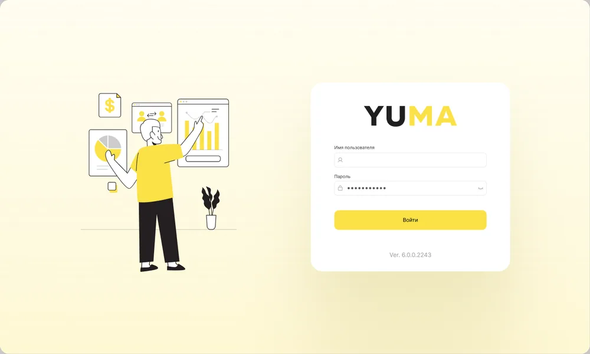
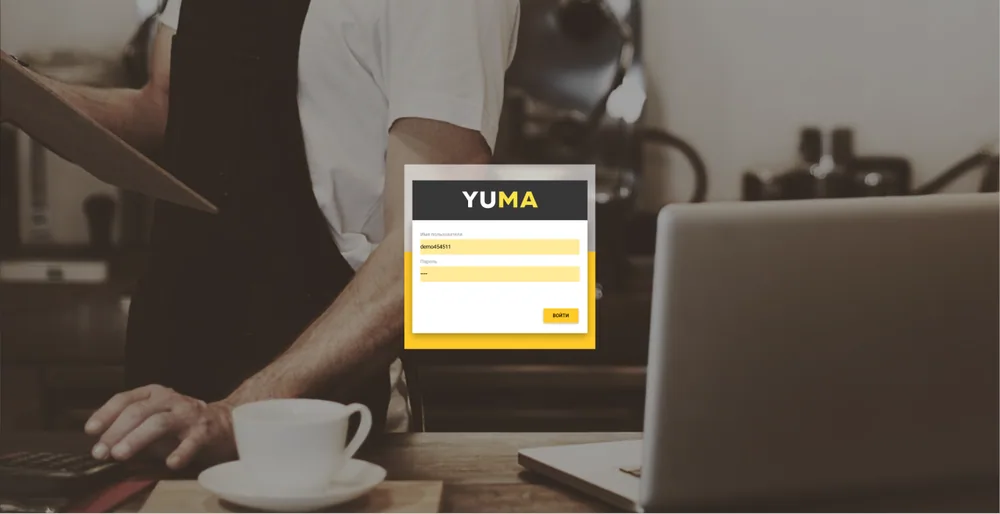
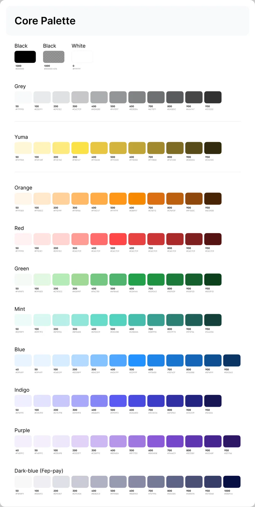
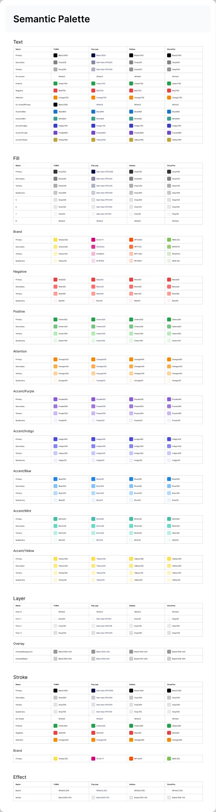
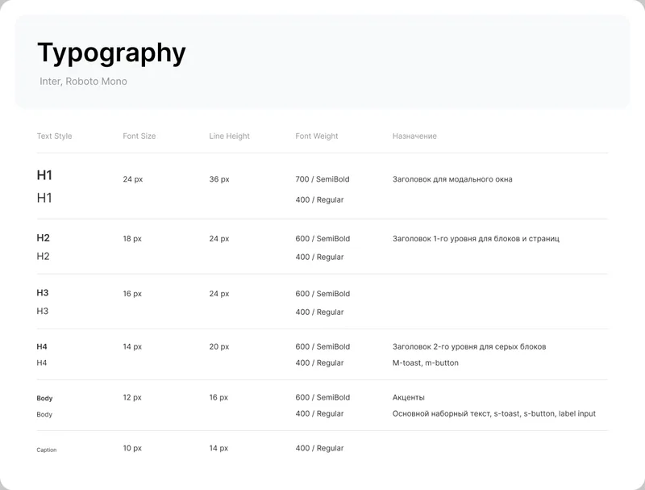
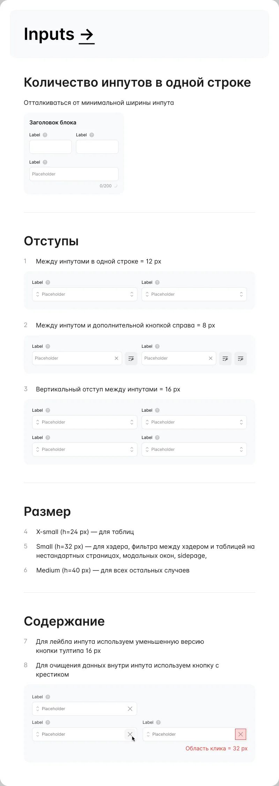
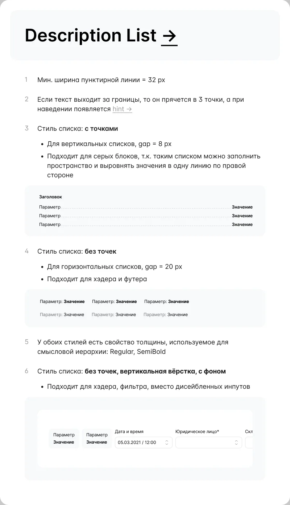

YUMA Back Office01
Обновила визуальный язык бэк-офиса YUMA и собрала его в систему: компоненты, состояния, семантическая палитра и гайды по применению.

Бэк-офис — рабочее место владельца и управляющего ресторана.
YUMA — B2B SaaS-система для автоматизации ресторанов: POS-касса, киоск самообслуживания, kitchen display, приложения официанта, гостя и курьера. Бэк-офис связывает всё это вместе: меню и товары, склад, отчёты, персонал, маркетинг, финансы.
Продукт большой: десятки разделов и сценариев, которые росли постепенно. Нужно было обновить визуальный язык и собрать минимальную дизайн-систему, на которую команда сможет опираться дальше.
Сделать концепцию, которую можно последовательно применить к сотням страниц.
- Разработать новую визуальную концепцию бэк-офиса — такую, чтобы она масштабировалась на большое количество страниц и сценариев.
- Обновить набор интерфейсных компонентов и описать правила их использования.
Потяните ползунок, чтобы сравнить экраны.
В старой версии все поля карточки товара жили на одном полотне, а жёлтый был единственным акцентом — им выделялись и кнопки, и переключатели, и заголовки групп. Я разбила экран на смысловые блоки, перевела интерфейс на спокойную светлую основу и оставила жёлтый только для главных действий.






Общая концепция, масштабированная на весь продукт.
- Визуальная концепция. Разработала общий язык интерфейса — светлые слои, карточки, спокойная типографика — и масштабировала его на множество страниц продукта.
- Компоненты. Создала и обновила набор компонентов, продумала их состояния и правила применения.
- Семантическая палитра. Цвета закреплены за ролями — текст, заливки, бренд, позитив, негатив, внимание, акценты — и последовательно используются для разных состояний.
- Гайды. Для новых компонентов подготовила описания поведения и правил использования, чтобы система оставалась целостной при дальнейшей работе.

Палитра, токены и компоненты — с описанием состояний.
Core-палитра из одиннадцати шкал и семантический слой поверх неё. Семантические токены описаны для четырёх брендов экосистемы, поэтому одни и те же компоненты можно перекрашивать без правок в макетах.








Единая визуальная система, которую можно масштабировать на новые страницы и сценарии.
Новые компоненты и гайды стали основой для более последовательной и самостоятельной работы команды с интерфейсом: дизайнеры и разработчики опираются на одни и те же правила.